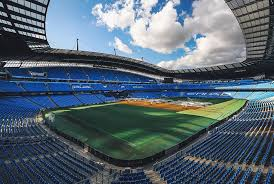

Home Christmas Markets Trafford Centre Science and Industry Tourist Attractions
The City of Manchester Stadium in Clayton, Manchester, currently known as the Etihad Stadium for sponsorship reasons, is the home of Manchester City with a domestic football capacity of 55,017. This makes the stadium the sixth-largest in the Premier League and tenth-largest in the United KingdomThe Etihad Stadium is the home of Manchester City Football Club. The venue can also host a number of other events including concerts.